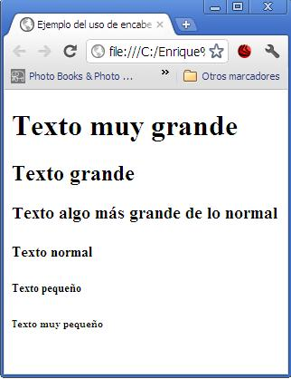

Texto.
Ideas Principales.
- La mayor parte del textor estructurado esta compuesto por encabezados
- El comando h tiene su jerarquia y su tamaño correspondiente
- Listas Ordenadas y Desordenadas
Apuntes de Clase.
hr es para colocar un separador
Parrafos
En Html, cada parrrafo tiene que estar delimitado por un elemento
En Html hay dos diferentes tipos de listas
Listas no ordenadas
Las listas no ordenadas se usan para marcar listas de articulos cuyo orden no es importante.
Cada lista desordenada comienza con un elemento Ul que delimita todos los elementos de la lista
Las listas solo pueden tener elementos LI
Listas Ordenadas
Las listas ordenadas son aquellas en las que el orden de los elementos si importan
